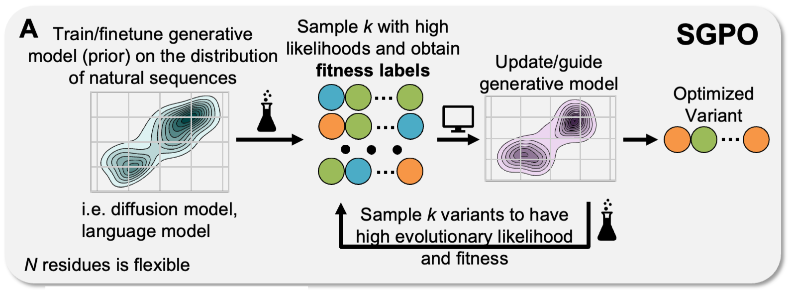
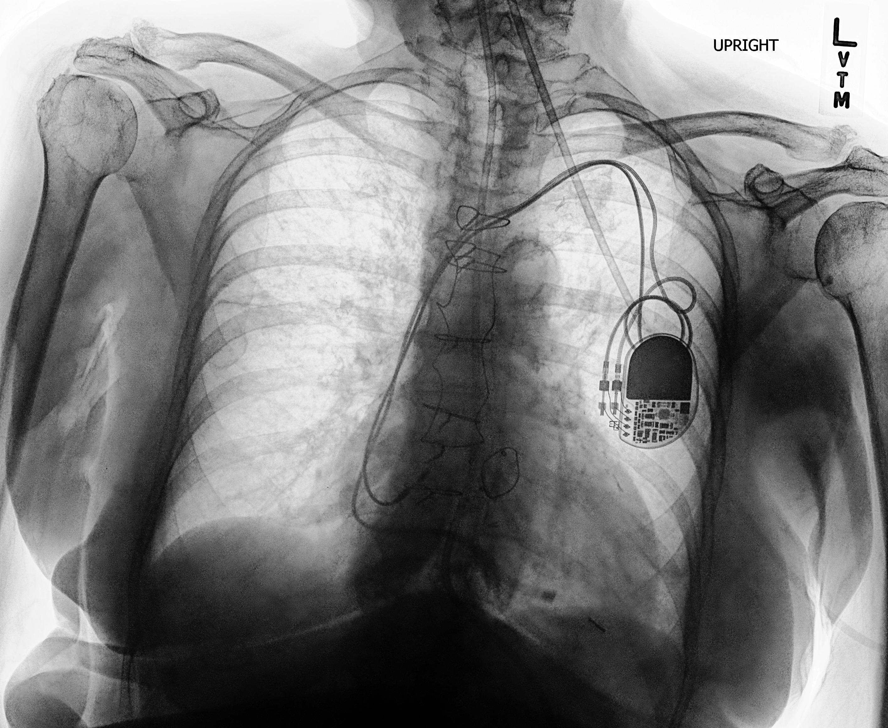

|
Daniel Khalil I'm an undergraduate at the California Institute of Technology (Caltech) and a Student Researcher at Google Research. At Caltech I have worked in the Vision Lab, and I currently work with Yisong Yue and Frances Arnold. I am also a researcher in the Berkeley AI Lab (BAIR). |

|
ResearchI'm interested in creating general solutions to impactful problems with machine learning. Specifically, I am interested in reinforcement learning, continual/representation learning, and other stuff. Representative papers are highlighted. |
|

|
Steering Generative Models with Experimental Data for Protein Fitness Optimization
Jason Yang, Wenda Chu, Daniel Khalil, Raul Astudillo, Bruce J. Wittmann, Frances H. Arnold, Yisong Yue NeurIPS, 2025 paper / code |
|
|
Learning Keypoints for Multi-Agent Behavior Analysis using Self-Supervision
Daniel Khalil, Christina Liu, Pietro Perona, Jennifer Sun, Markus Marks WACV, 2025 (Oral Presentation) project page / video / arXiv Learning Keypoints for Multi-Agent Behavior Analysis using Self-Supervision. |
ProjectsHere are some projects. Representative papers are highlighted. |
|

|
Chest X-Ray classifier
code PyTorch implementations of several different classifiers for chest X-ray images, based on the multi-class and multi-label CheXpert dataset. |
Miscellanea |
|
TA, IDS 157 (Statistical Inference) Spring 2025
TA, CS 159 (Advanced Topics in Machine Learning) Spring 2025 TA, CS38 (Algorithms) Spring 2024 TA, CS156a (Machine Learning) Fall 2024 |
|
Website from John Barron. |